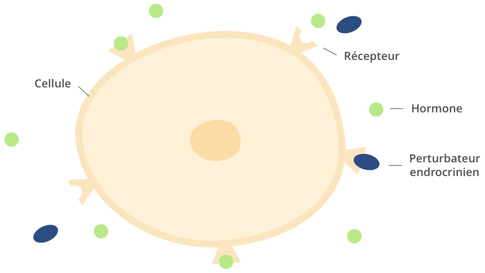

Omniprésents dans les médias, les perturbateurs endocriniens le sont aussi dans notre quotidien : on les trouve dans notre cuisine, notre salle de bains, notre environnement pour finalement les retrouver dans notre corps. Mais pourquoi sont-ils tant incriminés et existe-t-il des solutions pour y échapper ?
Comment les perturbateurs endocriniens agissent-ils sur notre corps ?
Les perturbateurs endocriniens sont des substances chimiques étrangères à l’organisme. Pour comprendre leur fonctionnement, il faut d’abord comprendre celui des hormones.
Dans une situation normale sans perturbateurs, notre corps sécrète des hormones qui envoient des messages aux organes concernés afin de provoquer une réaction : augmenter la température, produire des spermatozoïdes, réguler la faim, la satiété, l’insuline, ou encore le sommeil.
Au contact de perturbateurs endocriniens, les choses se compliquent. En effet, la composition des perturbateurs endocriniens est très proche de celle de nos hormones naturelles, et ils interfèrent donc avec leur fonctionnement. Ils peuvent alors bloquer l’envoi de certains messages par les hormones, ou conduire à l’envoi de messages erronés.

Quels sont leurs effets ?
Les perturbateurs endocriniens sont accusés d’être responsables de différents problèmes de santé :
- Stérilité : leur action interfère avec le message destiné à la production de spermatozoïdes, et favorise alors l’infertilité.
- Cancers : l’action des perturbateurs endocriniens favorise une surproduction de tissus et donc la croissance de tumeurs. Ils sont mis en cause dans les cas de cancers de la thyroïde, du sein et de la prostate.
- Obésité : Le bisphénol A a été reconnu comme un facteur d’obésité. Il serait responsable du dysfonctionnement des hormones destinées à réguler l’appétit.
- Diabète : Certains perturbateurs ciblent les cellules du pancréas et entraînent une résistance à l’insuline, ce qui représente un facteur de risque de diabète de type 2.
Une étude récente a montré que les effets de ces perturbateurs endocriniens peuvent être multipliés par 10 voire 10 000 lorsqu’ils sont mélangés. Cet “effet cocktail” accentue leur toxicité dans notre corps.
Nous sommes par ailleurs plus réceptifs aux perturbateurs endocriniens et à leurs effets au cours de quatre périodes de notre vie : lors de la formation du foetus, l’enfance, l’adolescence ainsi que pendant la grossesse ,qui sont des périodes où notre système hormonal est très actif et donc très réceptif.
Où les trouve-t-on ?
Les perturbateurs endocriniens sont présents partout :
- Alimentation : ils sont présents dans de nombreux pesticides utilisés dans les cultures , mais aussi dans certains additifs alimentaires (E214, E215, E218 ou encore E219)
- Cosmétiques et produits d’hygiène : ils sont présents la plupart des gels douche, shampooings, crèmes, protections féminines ou encore dentifrices. Ils sont indiqués dans la composition sous le nom de BHA, BHT, Paraben, Ethylhexyl methoxycinnamate, Triclosan, Benzophenone, ou encore Cyclomethicone.
- Produits d’entretien : ces produits contiennent souvent du triclosan ou des phtalates, en particulier lorsqu’ils ont une action anti-bactérienne
- Emballages : ils sont présents dans de nombreux plastiques ainsi que dans certaines conserves, le plus répandu étant le Bisphénol A
- Médicaments : de nombreux médicaments contiennent des parabènes et sont suspectés de perturber le système hormonal (Humex, Drill, Biafine, de nombreux sirops contre la toux, les formes génériques d’ibuprofène et de paracétamol…). Retrouvez la liste des 400 médicaments concernés établie par Le Monde
- Produits divers : on les retrouve dans les parfums d’intérieur, peintures fraîches, textiles de maison qui résistent à l’inflammation, vernis pour bois
- Dans l’environnement : d’anciens perturbateurs endocriniens subsistent dans les sols, dans l’eau et dans l’air.
Comment les éviter ?
Si nous ne pouvons pas contrôler l’origine de tous ces perturbateurs, nous pouvons toutefois diminuer notre exposition par des gestes simples.
- Scannez vos produits avec Blomy pour détecter les additifs nocifs 🙂
- Privilégiez les aliments d’origine biologique dont la culture est garantie sans utilisation de pesticides chimiques
- Lavez bien vos fruits et légumes avant de les consommer
- Privilégiez les viandes maigres ou retirez le gras car, les perturbateurs endocriniens aiment se loger dans les parties grasses
- Remplacez votre gel douche par des produits plus simples, comme du savon de Marseille
- Privilégiez les produits garantis sans parabens et sans phtalates
- Privilégiez les cosmétiques solides qui ne contiennent pas d’agent conservateur (certaines marques comme Lamazuna et Pachamamaï se sont lancées dans ce type de produits)
- Privilégiez la cosmétique bio, y compris pour les cotons démaquillants qui sont souvent blanchis à l’aide de dioxine et qui contiennent des pesticides
- Evitez de mettre du parfum ou du vernis à ongles, car ceux-ci restent en contact prolongé avec notre peau. Si vous ne pouvez pas vous passer de parfum, privilégiez un parfum naturel, ou bien pulvérisez-le sur vos vêtements plutôt que sur votre peau
- Pour les protections féminines, adoptez la coupe menstruelle : de nombreuses marques en proposent aujourd’hui, comme Dans ma culotte et Meluna
- Pour les bébés, utilisez des couches en coton bio ou des couches lavables
- Evitez les emballages toxiques (retrouvez notre article sur le sujet)
- Favorisez l’achat de produits stockés dans des emballages garantis sans contaminant (verre, plastique de type 2, 4 et 5, acier inoxydable)
- Pour limiter le transfert des polluants, débarrassez-vous des emballages une fois à la maison
- Privilégiez le vrac, en apportant vos propres emballages en tissu
- Privilégiez la conservation des produits dans des bocaux en verre
- Aérez régulièrement votre appartement ou maison et nettoyez au moins une fois par semaine
- Utilisez des produits naturels pour nettoyer la maison. Remplacez votre lave-vitre, votre détartrant ou encore votre adoucissant par du vinaigre blanc. Utilisez du bicarbonate de soude pour nettoyer les surfaces ou désodoriser.
- Si vous repeignez une chambre (et notamment pour l’arrivée d’un nouveau-né) : faites-le bien en amont et aérez suffisamment jusqu’à ce que l’odeur de peinture disparaisse totalement
- Privilégiez la literie estampillée “non-traitée”, la plupart des traitements anti (anti-acarien, anti-bactérien) contenant des perturbateurs endocriniens
- Évitez les prises anti-moustiques et privilégiez les alternatives naturelles à base de citronnelle
- Concernant les jouets pour enfants, privilégiez les jouets en bois ou en plastique dur, et qui ne contiennent pas de bisphénol

Bonjour je souhaite porter des gouttières dentaire type invisalign. Pensez-vous qu’il y a des perturbateurs endocriniens ?
J’ai acheté sans faire attention un abattant wc en plastique avec un additif antibactérien dans le plastique; Est ce nocif ?
Merci, pour les conseils, pourriez vous me conseiller un dentifrice ?
Merci
bicarbonate charbon actif huile de coco feront très bien l’affaire
Merci pour cet article très clair et compréhensible, comme d’habitude.
Juste une précision, concernant le conseil « Évitez les prises anti-moustiques et privilégiez les alternatives naturelles à base de citronnelle » :
La Citronelle est d’une efficacité limitée, et les huiles essentielles ne sont pas neutres. Privilégier plutôt les MOUSTIQUAIRES sur les fenêtres et / ou sur les lits, surtout les lits des touts-petits. Les moustiques présents en milieu urbain, et surtout à l’intérieur de nos maisons, sont surtout ceux que NOUS ELEVONS NOUS-MEMES, en laissant un peu partout autour de nos habitations des petits points d’eau stagnantes (et sans poissons ou autres prédateurs). Vérifier ou faire vérifier soucoupes, seaux, abreuvoirs, gouttières, regards, vides sanitaires, et tout point d’eau et les vider. Les récupérateurs d’eaux pluviales doivent être équipés de moustiquaires à toutes les entrées et sorties.
Formidable tous vos articles. Par contre un vrai problème, où trouver du vrai savon de Marseille sans que le produit soit trop cher ?
Formidable tous vos articles. Par contre un vrai problème, où trouver du vrai savon de Marseille sans que le produit soit trop cher ?
Bonjour,
Je vous remercie pour vos articles très intéressants. Si je comprends bien, les cosmétiques avec les perturbateurs endocriniens sont dangereux pour les plus jeunes et cela se comprend. Pour ma part, c’est trop tard, il aurait fallu savoir cela bien plus tôt car, du coup, mes enfants n’ont pas été protégés. Ce qui me rassure maintenant, c’est que je n’ai guère besoin de faire attention à mes cosmétiques, vu mon âge maintenant. D’ailleurs, j’utilise l’application de que choisir. Très peu sont très nocifs pour les adultes.
Bonjour Julie. Merci pour votre appli dont je ne peux plus me passer. Ma priorité est de chasser les additifs or j’ai remarqué que lorsque vous notez un produit excellent ou bon parce qu’il présente des qualités nutritionnelles vous ne mettez pas en évidence d’emblée la présence d’additifs parfois nocifs. Serait-ce possible de le signaler d’emblée avec un astérisque à côté de votre note ce qui ferait gagner du temps lorsqu’on fait ses courses ? Merci aussi pour vos super articles et votre investissement
Bonjour, je suis sous Android et il m’est impossible de partager l’article via le bouton « partager » de FB qui se trouve plus haut.
L’article rédigé par Le Monde concernant les médicaments, date du 23 Mai 2011. Peut-être qu’à ce jour, certains médicaments présents sur la liste (en lien) ont été supprimés du commerce ou remplacés par d’autres ne contenant pas de perturbateurs endocriniens ?? … Souhaitons-le !!
Il y a un risque environnemental diffus pour toute la population, mais les caractéristiques de l’exposition professionnelle (dose, fréquence et durée) induisent des risques largement majorés pour certains métiers en contact avec des médicaments, solvants, pesticides, métaux dans les industries chimiques, pharmaceutiques, cosmétiques, plasturgiques, … et dans le secteur agricole : » La prévention des risques professionnels des perturbateurs endocriniens » : http://www.officiel-prevention.com/protections-collectives-organisation-ergonomie/risque-chimique/detail_dossier_CHSCT.php?rub=38&ssrub=69&dossid=507
De nombreux additifs nocifs ou douteux dans l’alimentation quotidienne, bio également pour certains produits. Blomy devrait être plus attentive à cela, il me semble que c’est plus dangereux que « trop de sel ».
Bonsoir,
Je viens de découvrir Blomy , et en faisant mes courses je découvre avec stupéfaction que les produits que j’avais l’habitude d’acheter étaient mauvais pour ma santé.
Étant végétarienne depuis bientôt trois ans, je privilégie un mode de vie plus saine et votre application va me rendre un grand service ..
Encore merci pour tout vos conseils.
Tres utile et synthétique, merci
Bonsoir, utilisez l’application: clean beauty…. cela rend bien service!
Merci beaucoup pour tous ces conseils
Votre article sur les perturbateurs endocriniens m’a interpellé, j’ai donc scanné avec votre appli mes gels douche et là rien …, peut être que votre appli ne concerne que les produits alimentaires, dans ce cas à quand les produits cosmétiques et ménagers ?
Merci
Pour les produits de beauté, vous pouvez utiliser l’application CosmEthics
Bonsoir, l’Appli clean beauty pour les cosmétiques…..génial…, nath
Bonjour Rémy,
Effectivement nous ne scannons que les produits alimentaires pour le moment. Mais nous sommes justement en train de travailler sur l’analyse des cosmétiques et produits d’hygiène 🙂
cela serait super.
Car votre appli est géniale et très simple à utiliser.
Encore merci
Je fais mon nettoyant ménagé vinaigre blanc produit vaisselle savon noir épluchures citron oranges bicarbonate de soude je ne sais pas comment le diluer le bicarbonate ?
Merci pour cet article trés intéressant.
Vous parlez des moustiques et vous proposez la citronnelle naturelle.
Malheureusement, la citronnelle, l’Eucalyptus et autres dérivés naturels ont perdus de leur efficacité.
Les moustiques évoluant pour survivre face aux pesticides et autres cochonneries chimiques ont développé une résistance naturelle….. aux anti-moustiques naturels.
je peux vous dire que chez moi, les moustiques prennent la citronnelle pour une aire de repos, sans exagérer.
Il existe une solution pour celles et ceux qui, comme moi n’ont pas de clim par fortes chaleur.
Il suffit de positionner un ventilateur de façon à ce qu’il souffle à l’horizontale, juste au dessus du lit quand on est couché, un peu au dessus de nous pour ne pas nous toucher si on ne supporte pas.
Même la plus petite vitesse suffit pour tenir les moustiques éloignés, le flux étant trop fort pour qu’il puissent voler.
Ca consomme un peu d’électricité, mais c’est moins cher qu’un anti moustique chimique, sans parler des bienfaits pour la santé au final.
Si d’autres ont des solutions, je suis preneur.
BIO KILL original insecticide autorisé dans les hôpitaux cuisines hôtels etc… que j’utilise depuis bientôt 30 ans. Facile à compter avec l’âge de nos enfants.
Beaucoup moins toxique que tous les autres et surtout très efficace. Le matin vous retrouvez les insectes au sol ou sur vos meubles morts. Je le recommande très souvent.
Merci Julie pour tous vos articles.
Annoncez que le programme nutrition est à 39€ ça évitera d’y aller et de renoncer
C’est faux ..il n’est pas à 39 mais à 59 euros. ..
Bonjour, oui mais nous sommes attirés par la publicité, enfermés dans nos habitudes, et lors de nos achats nous sommes souvent incapables de lire les compositions en caractères très petits.
Vous avez raison sur tout, mais les responsables ne sont pas uniquement les fabricants, nous avons notre part de responsabilité.
Heureusement que blomy est là pour nous reveiller.
Merci.
Voilà un commentaire plus qu’intéressant.
Vous dites, avec une grande justesse, que nous sommes responsables.
Et c’est tellement vrai!
Si les consommateurs prenaient leurs responsabilités au lieu de dire: » lorsque je serais malade, je ferai attention », ou de courir vers les pharmacies dés qu’ils ont peur de, les choses changeraient.
Si une minorité de gens décidaient de ne plus acheter tel ou tel produit, les choses changeraient.
Car je défie quiconque de me dire qu’il a été menacé physiquement par un industriel pour acheter ses produits néfastes pour la santé.
Non, personne n’a jamais été menacé.
Alors pourquoi ça fonctionne tellement bien?
Parce que les gens achètent, attirés par la facilité.
Contre les moustiques la nuit, la moustiquaire est aussi très bien. Pas besoin qu’elle soit imprégnée de produit
Bonjour Julie,
60 millions de consommateurs a sorti un « hors série » en juillet août dernier, sur les « cosmétiques non toxiques » que j’ai acheté, très intéressant, abordant évidemment les perturbateurs endocriniens.
Et vos conseils/articles se rajoutent, et sont encore plus complets. Quel casse tête pour vous et la jeune génération, pour choisir les bons produits etc……pas évident quand on court après le temps !
Gare aux enfants notamment, plus sensibles et déjà exposés ! Dixit mon médecin.
J’adore votre votre application que j’utilise le plus souvent possible, ainsi que tous vos articles.
Merci !
Bonjour les yukistes,
J’apprécie Blomy et ses critères de sélection.Cela étant ,dans la jungle des produits, certains sont mauvais ou médiocres chez Blomy et bons chez d’autres comme le célèbre Jean Michel Cohen….dans le doute je m’abstiens. ..
Merci pour toutes ces investigations, avec Moncento&bayer des soucis à ce faire. Bon courage mais peut-être je dis bien peut-être avec le BIO nous allons à une meilleure santé pour notre planète tout êtres vivants inclus merci
Je me sers tous les jours de votre appli!!! Allez vous lancer la meme appli pour les produits cosmeto?? Ça m’arrangerait bien 😊
Bonjour bonne initiative article à conserver. Concernant le coup de pouce ma fille et des amis sont chez vous actuellement
MERCI ! Votre aide est tellement précieuse… Depuis qu’un ami m’a fait découvrir votre site en août, j’ai non seulement fait le tri dans mes placards (de cuisine pour l’instant), mais aussi je fais mes courses en photographiant via Blomy tous les produits qui m’intéressent (et ça modifie mes habitudes !). Et je transmets la découverte de votre site autour de moi (ma belle-fille l’utilise maintenant pour ses courses qu’elle vient faire en France – et elle a deux enfants de 10 e 4 ans – en regrettant qu’il ne fonctionne pas en Suisse où elle habite… MERCI !
Merci Laurence, ça nous fait vraiment chaud au coeur ! Effectivement, l’appli n’est disponible que pour la France pour le moment mais on espère bien s’internationaliser d’ici peu 🙂
Merci beaucoup pour toutes vos infos et votre bon travail , très bon article comme d’habitude. Cordialement
Très bon article et complet. Cette société de consommation nous tue un peu plus tous les jours, mais grâce aux informations et à la prise de conscience on peut lutter contre ça
Merci pour cet article très intéressant et très clair ! C’est avec des initiatives comme les votres que nous pouvons prendre pleinement conscience des dangers pour notre santé et changer nos habitudes. Si nous sommes nombreux à changer nos mode de consommation, nous aurons alors le « pouvoir » de changer les choses !!
Je partage déjà ces informations blomy avec mon entourage et je vais continuer à parler de vous autour de moi !! Bravo à toute l’équipe blomy !!! Et surtout MERCI
Merci beaucoup Corinne ! Nous sommes également convaincus que si chacun change ses habitudes à son échelle, ça pourra faire changer les choses à une plus grande échelle 🙂
Incroyable…on nous empoisonne à petit feu… c’est comme une guerre silencieuse. … ça fait peur.
Y’a du nouveau …
http://www.lemonde.fr/planete/article/2017/10/04/perturbateurs-endocriniens-le-vote-camouflet-du-parlement-europeen_5196122_3244.html
Bonsoir, j’ai le nom d’une application qui analyse les pdts cosmétiques et pdts d’hygiène … à la recherche des perturbateurs endocriniens…. puis je vous donner son nom? Merci pour votre appli géniale … que je diffuse largement autour de moi.. cordialement.
Bonjour je suis intéressée par ton application pour les produits cosmétiques car les étiquettes sont illisibles.
Merci
Bonsoir Géraldine, voici l’application: clean beauty à télécharger…. c’est hallucinant tous ces pdts cosmétiques associés ds nos crèmes et soins pour le corps… amicalement
bonsoir moi aussi cette application m’intéresse
C’est dingue que le gouvernement ne fasse rien et permettre cet empoissonnement. Les lobbies y seraient pour quelque chose ?
Merci à l’équipe de Blomy d’exister🐸
Merci beaucoup pour cet article, intéressant et synthétique. Merci également pour votre appli dont je ne peux plus me passer et dont je fais la promotion autour de moi, permettant à la famille et aux amis qui l’ont également installée, d’être plus attentifs à leurs achats alimentaires et par conséquent à leur santé! Je me joins à toutes celles et ceux qui « réclament » une version pour les produits d’hygiene et ménagers! 🙂 Très bonne continuation!
Merci beaucoup Laure pour les encouragements, et merci d’en parler autour de toi 🙂 Pour les cosmétiques et produits d’hygiène on est justement en train de travailler sur le sujet 😉
Merci à toute votre équipe pour cette application tellement utile. J’en ai parlé à ma famille qui la aussitôt installée.
Il y a une erreur dans l’article, vous dites que le bio est garanti sans pesticide, ce qui est faux.
Bonjour, le bio garantit l’absence d’utilisation de pesticides chimiques, mais il ne garantit en effet pas son absence totale puisque les cultures peuvent être contaminées par des cultures voisines. Cependant, ils en contiennent quand même très très peu dans les faits.
Alors oui et non pour le bio… Il faut quand même scanner les produits avec Clean Beauty et bientôt celle de Blomy 😉
Bon résumé
Bonsoir, vous parlez de paraben, est ce que l ethylparaben et methylparaben est équivalent au paraben ? Merci pour vos explications très utiles. Mais je m aperçoit que tout est nuisible, ça fait peur. Bien à vous
Bonjour Dominique,
Selon l’UFC Que Choisir, l’ethtylparaben et le methylparaben sont une famille de parabènes qui ne présenteraient pas de danger, et qui ont été blanchis par les experts français et européens.
J’ai par pure chance été prévenu de la sortie de Blomy un peu avant qu’elle ne se fasse. Je l’ai installée et utilisée dès le premier jour.
Aujourd’hui, 100% de mes courses en alimentation son sans AUCUN additif (nocif ou pas) et je suis en train de travailler à en faire de même pour les additifs nocifs des produits d’hygiène corporelle et de l’habitat.
Quand je vois ce qu’on donné les scans de mon ancien régime, je pense pouvoir dire que vous avez rallongé ma vie, au moins ma vie en forme! En bonus, par mon passage à des achats « humains » je contribue à les promouvoir.
Je ne pense pas que je pourrais jamais vous remercier assez…
Sur le plan de l’app android : à quand les mêmes fonctionnalités que celle pour iOs?
Je viens de participer à votre campagne de dons, ça me semble le minimum.
Et surtout, continuez et restez indépendants : c’est LA condition!
Un immense merci à toi Jean-Luc de la part de toute l’équipe pour ton soutien et ton don ! On est vraiment super contents que l’appli puisse aider à se tourner vers des produits plus sains ! Pour Android, les nouvelles fonctionnalités vont arriver au fur et à mesure : d’ici 3 semaines il y aura notamment la possibilité de rajouter un produit inconnu 🙂 Concernant l’indépendance, tu peux compter sur nous : on a à coeur de faire un projet porteur de sens, et l’indépendance est une condition sine qua non pour y parvenir !
Nous sommes devenus adeptes de Blomy et nos achats sont conditionnés par votre application utilisée systématiquement en magasin. QUESTION: peut- on connaître votre méthode de travail pour renseigner chaque article ? Analyse indépendante (?!) ou étiquetage du fournisseur ? Merci et bien cordialement
Bonjour, chaque article est renseigné par les utilisateurs eux-mêmes, en transmettant les informations nutritionnelles, la liste des ingrédients, ainsi qu’une photographie du produit.
Cordialement
Ce n’est pas la réponse que j’attendais. Ma question était : comment sont connues les informations concernant la constitution de chaque produit ? Est-ce une complilation et un traitement des infos déclarées par le fabriquant sur les étiquettes ou bien le résultat d’une analyse indépendante pour chaque produit ?
Bonjour France et Philippe ! Notre notation est faite de manière totalement indépendante de la façon suivante :
– La qualité nutritionnelle représente 60% de la note. La méthode de calcul repose sur les préconisations du Professeur Serge Hercberg dans le cadre de la Stratégie Nationale de Santé proposée par l’Etat et validées dans le cadre de la mise en place du Nutriscore. Cette méthode prend en compte les éléments suivants : calories, sucre, sel, graisses saturées, protéines, fibres, fruits et légumes
– Les additifs représentent 30% de la note du produit. Nous nous basons pour cela sur « Le nouveau guide des additifs » paru le 9 mars 2017 aux éditions Thierry Souccar et réalisé par les journalistes scientifiques de LaNutrition.fr sous la direction d’Anne-Laure Denans, docteur en pharmacie et diplômée en nutrition.
– La dimension biologique représente 10% de la note. Les produits considérés comme biologiques sont ceux disposant du label bio français (AB) et/ou du label bio européen (Eurofeuille)
Toutes ces informations sont des informations présentes sur l’emballage, nous ne procédons pas à des analyses directement sur les produits.
J’espère que cela répond à votre question 🙂 Sinon, n’hésitez pas à me contacter à julie@blomy.io !
Votre appli est géniale, mais effectivement elle repose sur l’analyse des données du fabricant. Ce serait encore plus génial si elle prenait en compte les résultats de tests indépendants. Je prends l’exemple d’une étude récente sur le thé qui montre que les feuilles de certaines marques (lipton en particulier) sont bourrées de pesticides, ce qui n’est évidemment pas indiqué par le fabricant.
Bonjour,
L’article du monde daté de 2011 et parle des études faites en 2004 , qui laisserais planer un doute.
Existe t il des résultats d’études plus récentes
Et oui…yapuka blomy!!
Merci pour cet article.
J’adore votre application que j’utilise très régulièrement et que j’exporte autour de moi…à quand le scan possible pour les produits d’entretien, d’hygiène et autre afin de lister justement ces perturbateurs endocriniens?? Peut-être déjà en prévision??
Merci Anaïs 🙂 Oui pour les cosmétiques et produits d’hygiène ça fait bien partie de nos projets 😉
Oui c’est vraiment une bonne idée ! Je voulais aussi vous le proposer. Un partenariat avec Que choisir serait super. Leur travail est énorme, mais c’est tellement pas pratique de chercher dans leur base de données.. alors qu’avec votre technique de scan, ce serait bien utile !
J’ai hâte!!!
Toujours super intéressant
Fatima . Merci Julie
Pour les articles sa me permet de connaître plus de choses et comme je scanne au supermarché c’est super.
Bravo à vous tous🤗
Merci pour cet article qui donne envie d’en savoir plus ! Je recommande régulièrement blomy autour de moi et scanne mes articles, y compris au supermarché, et j’ai cru remarquer que je ne suis pas la seule 🙂
Bravo à vous !
Merci Alexandra, c’est super sympa d’en parler autour de toi 🙂 Et ça nous fait trop plaisir de voir que ça commence à pas mal scanner en supermarché 😀
J’ai longtemps rêvé d’une application telle que la votre; depuis que je l’ai découverte, je ne peux plus m’en passer, et j’ai convaincu mes enfants et ma maman de 70 ans de l’utiliser !
Bravo pour votre excellent travail et votre mission d’information indispensable! ,J’espère que de plus en plus de gens utiliseront Blomy et que, petit à petit, grâce à vous, les mentalités changeront, pour une alimentation plus saine…Il y a vraiment des gros progrès à faire!
Bonne continuation à toute l’équipe!
Wahou un immense merci Sylvie ! ça nous fait chaud au coeur !
Bonjour et merci pour toutes vos informations particulièrement intéressantes. Grâce à vous et vos enquêtes, nous apprenons à faire le point sur tout notre quotidien et surtout à mieux gérer nos achats !!
Bravo et surtout … continuez
Merci beaucoup pour les encouragements 🙂
Bonjour à tous !
Merci bcp pour le super article ! …ainsi que les autres aussi…!
Merci, on est super contents que les articles te plaisent !
Merci pour cet article, on y sent un réel investissement de votre part et une vraie recherche en amont. (Et on apprend plein de trucs supers utiles ! :D)
Bonne continuation à vous
Merci beaucoup Alex 🙂
Merci à toute l équipe de Blomy qui a donné le jour à une application utile et intelligente.